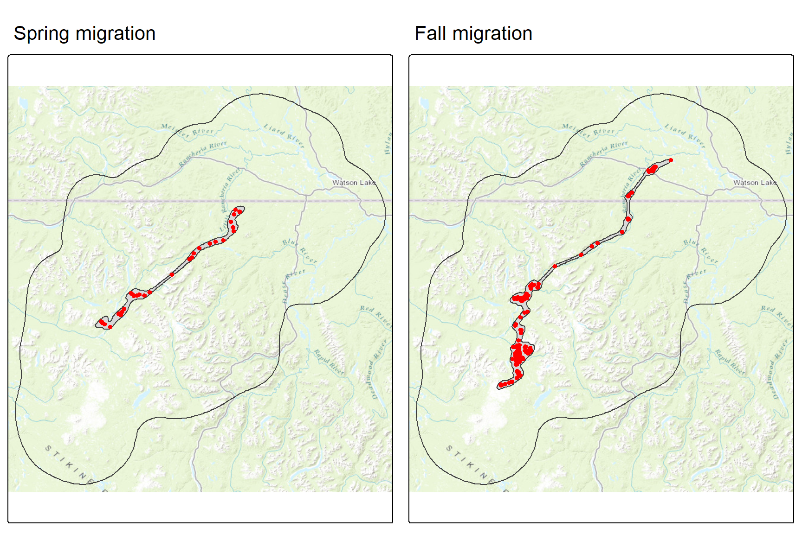
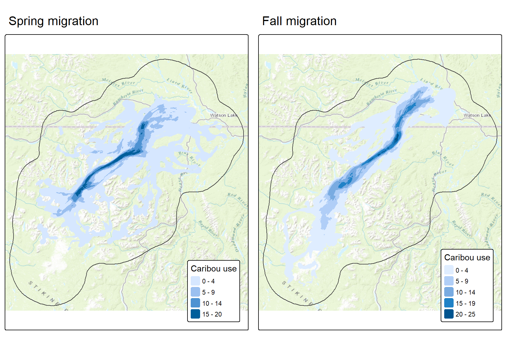
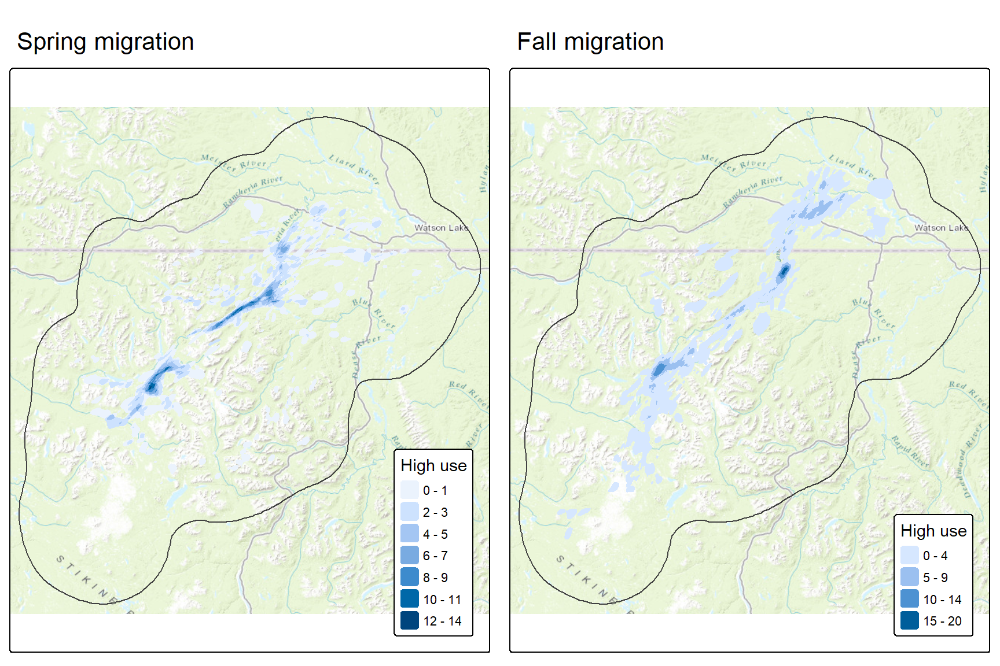

Code
library(sf)
library(amt)
library(tmap)
library(terra)
library(tidyverse)Overview of the importance of identifying and mapping seasonal movement corridors for caribou.
In this section we describe the steps used to estimate individual home ranges using the KDE approach and compare it to another commonly used method, the minimum convex hull (MCP). We illustrate the approach for one individual caribou.
library(sf)
library(amt)
library(tmap)
library(terra)
library(tidyverse)This step is described in “Seasonal migrations” in the “Defining segments” section.
Simply connecting the dots of a migration sequence with a straight line gives a rough idea of the route, but it’s an oversimplification. It doesn’t reveal the true width of the path or, more importantly, the specific areas where an animal stopped-over to rest and feed. To build a more realistic map, we used a statistical method called the Brownian Bridge Movement Model (BBMM). This model is incorporates a key parameter called the Brownian motion variance (BMV), which is a statistical estimate of an individual’s mobility, making the resulting map more realistic. The output of this model is a utilization distribution (UD), which is essentially a “heat map” or “probability surface.” Instead of just showing a line, the UD shows the likelihood of an individual having been in any given location along its route. The “hotter” the color, the more time the individual likely spent there.
Using a BBMM to create a utilization distribution has two major benefits:
gps <- read_csv("../../data/little_rancheria/caribou.csv")
aoi <- st_read("../../data/little_rancheria/corridors.gpkg", "aoi", quiet=TRUE)
# Spring
gps1s <- gps |> filter(id=="SKRATALR0018" & year==2021 & migration=="Spring migration")
gps1s_sf <- gps1s |>
st_as_sf(coords=c("longitude", "latitude"), crs=4326, remove=FALSE)
xs <- st_read("../../data/little_rancheria/corridors.gpkg", "bbmm95", quiet=TRUE) |>
filter(id=="43141" & year==2021 & migration=="Spring migration")
# Fall
gps1f <- gps |> filter(id=="SKRATALR0018" & year==2021 & migration=="Fall migration")
gps1f_sf <- gps1f |>
st_as_sf(coords=c("longitude", "latitude"), crs=4326, remove=FALSE)
xf <- st_read("../../data/little_rancheria/corridors.gpkg", "bbmm95", quiet=TRUE) |>
filter(id=="43141" & year==2021 & migration=="Fall migration")
ms <- tm_basemap("Esri.WorldTopoMap") +
tm_shape(aoi) +
tm_borders() +
tm_shape(xs) +
tm_polygons(fill.legend = tm_legend_hide()) +
tm_shape(gps1s_sf) +
tm_dots(fill="red") +
tm_title("Spring migration")
mf <- tm_basemap("Esri.WorldTopoMap") +
tm_shape(aoi) +
tm_borders() +
tm_shape(xf) +
tm_polygons(fill.legend = tm_legend_hide()) +
tm_shape(gps1f_sf) +
tm_dots(fill="red") +
tm_title("Fall migration")
tmap_arrange(ms, mf)
To protect a migration, we need to see the main corridor used by the entire population, not just the path of one individual. This can be achieved this by combining all the individual maps into a single, comprehensive view of the herd’s movement. This involves a three step process:
rs <- rast("../../data/little_rancheria/spring_migration.tif")
ms <- tm_basemap("Esri.WorldTopoMap") +
tm_shape(aoi) +
tm_borders() +
tm_shape(rs) +
tm_raster(col.legend = tm_legend(
title = "Caribou use", position = tm_pos_in(pos.v = "bottom", pos.h="right"))) +
tm_title("Spring migration")
rf <- rast("../../data/little_rancheria/fall_migration.tif")
mf <- tm_basemap("Esri.WorldTopoMap") +
tm_shape(aoi) +
tm_borders() +
tm_shape(rf) +
tm_raster(col.legend = tm_legend(
title = "Caribou use", position = tm_pos_in(pos.v = "bottom", pos.h="right"))) +
tm_title("Fall migration")
tmap_arrange(ms, mf)
Finally, we can classify the resultant stacked map to visualize how 1) intensely different parts of the corridor are used by the herd and 2) where the key stopovers areas are located. This allows us to distinguish between occasional and essential parts of the corridor.
Output 1: Corridor use intensity
The levels of corridor use are typically defined as follows:
| Use Level | Definition | Importance |
|---|---|---|
| Low Use | Areas used by at least one individual. | Shows the maximum extent of the entire migration footprint. |
| Medium Use | Areas used by 10-20% of the individuals. | Represents regularly used routes. |
| High Use | Areas used by >20% of individuals. | Pinpoints the most critical, core pathways essential for the herd’s survival. |
Output 2: High use areas
High use areas or stopovers are areas where animals spend extended time foraging and resting during migration. They are defined as the top 10% of use values from the propulation-level probability map. Protecting these high-use areas is as important as protecting the connectivity between them.
rs <- rast("../../data/little_rancheria/spring_highuse.tif")
ms <- tm_basemap("Esri.WorldTopoMap") +
tm_shape(aoi) +
tm_borders() +
tm_shape(rs) +
tm_raster(col.legend = tm_legend(
title = "High use", position = tm_pos_in(pos.v = "bottom", pos.h="right"))) +
tm_title("Spring migration")
rf <- rast("../../data/little_rancheria/fall_highuse.tif")
mf <- tm_basemap("Esri.WorldTopoMap") +
tm_shape(aoi) +
tm_borders() +
tm_shape(rf) +
tm_raster(col.legend = tm_legend(
title = "High use", position = tm_pos_in(pos.v = "bottom", pos.h="right"))) +
tm_title("Fall migration")
tmap_arrange(ms, mf)